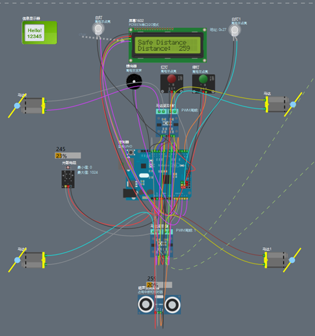

1.项目名称：基于Arduino UNO开发板的童车倒车报警系统
开发环境：Arduino UNO开发板+HC-SR04模块+LCD1602+光敏电阻+蜂鸣器+LED灯+马达驱动器
项目描述：该项目主要利用Arduino软件编写HC-SR04（超声波模块）、LCD1602、蜂鸣器、LED灯、马达驱动器和光敏电阻的代码，将已完成的代码烧录到Arduino UNO开发板中，HC-SR04（超声波模块）会检测车后方的实时距离并显示在LCD1602屏幕上，当距离小于20厘米时，蜂鸣器、LED（红）灯、会发出警报并且由马达驱动器驱动的车轮也会停止转动以保证童车的安全。光敏电阻检测到亮度为暗时，自动打开车LED（白）灯。
如图所示：
